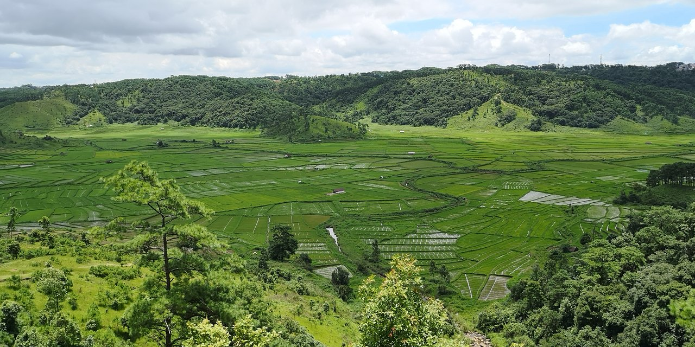
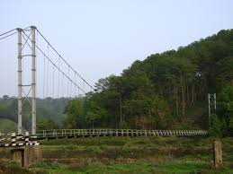
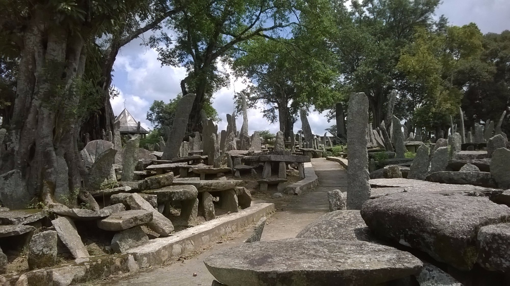
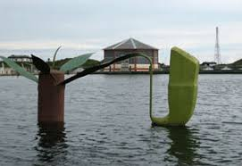
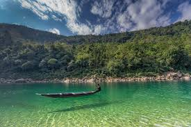
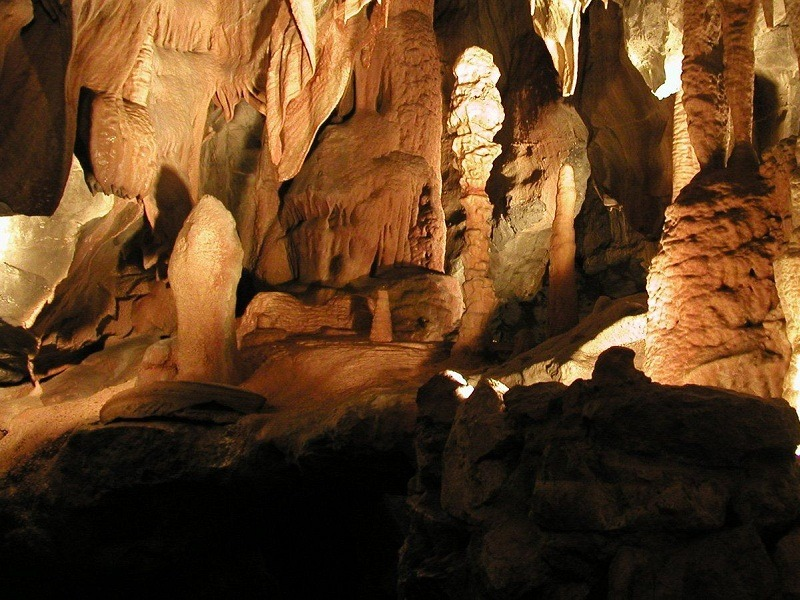

Major Attraction
1.Ialong park
 "At a distance of 7 km from Jowai Bus Stand, Ialong Park is an eco-park situated at Ialong village near Jowai in West Jaintia Hills district of Meghalaya. Situated on the Jowai-Silchar highway, it is one of the wonderful places to visit in Meghalaya and among the popular places to visit in Jowai.
Sprawling over an area of 12.80 hectares, Ialong Park is known for its sacred groves and a viewpoint which offers breathtaking views of Pynthorwah Valley. The park is constantly being renovated and beautified under the Special DRDA Tourism Project taken up by the District Administration. The place is well accommodated with water dams, toilets, canals, changing rooms etc. A variety of flowers, some native to Meghalaya adorn the park. One can sit on the grassy slopes and enjoy the mesmerizing sunset from the park.
The place offers a picturesque view of the paddy fields on the banks of River Myntdu. The park also has Traveller's nest, run by the Ialong Tourism Cooperative Society Limited, which provide a comfortable stay in nature lap. Treks & camp sites along the meandering Myntdu River are arranged all year round except the rainy season. Besides, the park also hosts monthly archery competitions for the local inhabitants as well as tourists.
Timings: 9 AM - 6 PM
Entry: Free"
2.Syntu Ksiar

"At a distance of 4 km from Jowai Bus Stand, Syntu Ksiar is a scenic place located in Jowai town of West Jaintia Hills district in Meghalaya. Situated on the banks of Myntdu River, it is one of the lovely places to visit in Jowai and among the famous historical places in Jaintia Hills.
Syntu Ksiar is a vast stretch of land that lies on the banks of Myntdu River. The literal meaning of Syntu Ksiar is 'the golden flower' in the local Jaintia language. According to the legend, the place got its name from a lady called Syntu of 'Iawchibidi' clan. It is believed that the lady was committed suicide by jumping into the river here. After she got drown into the river, a beautiful golden flower blooms in the middle of the river which is said to be very beautiful and cannot be plucked by anybody. Thus, the place got its name from this particular flower which grows here.
Syntu Ksiar is also renowned for being the center of the freedom struggle as this is the place from where freedom fighter Kiang Nangbah had initiated the freedom struggle against the British. He was hanged to death on 30th December 1862 in Jowai town. A memorial has been erected here in memory of Kiang Nangbah.
Today, Syntu Ksiar is an ideal picnic and angling spot in Jowai region. It is one of the places around Jowai where tourists come to relax and enjoy their families while basking in the soft sun and cool breeze from the river. There is a beautiful wire suspension bridge and a water harvesting system across the river. There are also several small fast-food joints around the place where you could enjoy some of the local delicacies.
Timings: 7 AM - 5 PM
Entry: Free"
3.Thadlaskein Lake
 "At a distance of 9 km from Jowai Bus Stand, Thadlaskein Lake is a placid lake located at Mukhla near Jowai in Meghalaya. Situated on the Shillong-Jowai highway, it is one of the beautiful lakes in Meghalaya and among the major places to experience the Jowai Tourism.
"At a distance of 9 km from Jowai Bus Stand, Thadlaskein Lake is a placid lake located at Mukhla near Jowai in Meghalaya. Situated on the Shillong-Jowai highway, it is one of the beautiful lakes in Meghalaya and among the major places to experience the Jowai Tourism.
Thadlaskein Lake is a manmade lake and is popular weekend hangout for the locals. Fed by a perennial spring, the lake was dug by the followers of Jaintia Chieftain, U Sajar Nangli by using the bottom of their bows. The Chieftain had an irreconcilable difference of opinion with the king of Jaintiapur, the Erstwhile Jaintia Kingdom, which now constitutes the Jaintia district of Bangladesh. U Sajar Nangli knew that his differences with the king would inevitably lead to intensive combat causing a bloodbath of their own people and he was unwilling to be responsible for such a tragedy. He decided to flee from the kingdom with his followers, but before they parted from their beloved motherland, they dug a beautiful lake at Thadlaskein as an eternal memorial. The lake is revered by the people of 'Raid Mukhla' who continue to offer sacrifice near the lake.
Apart from its historical significance, Thadlaskein Lake is also a very beautiful lake and extremely popular for outing, picnic and boating. The lake is surrounded by beautiful meadows and river Myntdu. Several types of rare orchids can also be seen here. The flora and fauna of the surrounding areas are absolutely breathtaking and a paradise for nature lovers. A small hotel managed by Meghalaya Tourism is just across the road which offers clean and good service.
Timings: 6 AM - 6 PM
Entry: Free"
4.Krang Shuri Waterfall
 "At a distance of 29 km from Jowai and 31 km from Dawki, Krang Shuri Waterfall is a majestic falls located near Amlarem village of Jaintia Hills district in Meghalaya. It is one of the exotic waterfalls in Meghalaya and among the top places to visit in Jowai.
"At a distance of 29 km from Jowai and 31 km from Dawki, Krang Shuri Waterfall is a majestic falls located near Amlarem village of Jaintia Hills district in Meghalaya. It is one of the exotic waterfalls in Meghalaya and among the top places to visit in Jowai.
Blessed with shimmering blue waters and sparkling sunlight, Krang Shuri Waterfalls is a stunning tourist attraction which is simply breathtaking. It cascades down from a height of about 40 feet into a crystal clear blue pool. One can swim and bathe in the pool but the water is so cold, and the rocks underneath are slippery. Life jacket is compulsory while getting into the pool.
There is a steep stone path leading to the falls from the parking place near Amlarem village. It takes about 30 minutes to reach the falls from the parking lot. On the way, one can get the top view of this mesmerizing waterfall from the nearby viewpoint. Enroute the journey, visitors can see silky cascades of clean water gushing all through the forest and further culminating in small waterfalls.
There is also a stone Bridge over Umiaknieh Stream near the falls. Also, there is a coffee shop, sitting bamboo benches and changing rooms for men and women near the falls.
Timings: 7 AM - 6 PM
Entry: Rs. 40 for Person & Rs. 100 for Life Jacket"
5.Nartiang Monoliths
 " At a distance of 24 km from Jowai, Nartiang Monoliths is a large cluster of monoliths located at Law Mulong area of Nartiang village in Meghalaya. Literally called as 'Garden of monoliths', the Monoliths Park is one of the renowned monuments in Meghalaya and among the well-known tourist places in Jowai.
Monoliths exist throughout the length and breadth of the Khasi and Jaintia Hills. However, the biggest collection of monoliths in one single area is to be found in Nartiang, the summer capital of the Jaintia rulers. According to legend, the cluster of monoliths erected to mark the reigns of the erstwhile Jaintia Kings. Some scholars also say that these monoliths were erected in memory of the establishment of the market from Raliang to Nartiang. The site has been declared of national importance under the Ancient Monument and Archaeological Sites and Remains Act 1958.
These monoliths cover a wide complex of about 100 m in diameter. The Menhirs (Upright stones) are locally known as Ki Moo Shynrang, and Dolmens (flat stones in the horizontal position) are known as Ki Moo Kynthai. Moo Iong Syiem, the tallest and biggest of the monoliths, is about 8 m in height, 2 m in breadth and 0.46 m in thickness. It was erected by U Marphalyngki, a trusted lieutenant of the Jaintia kings. The followers of the erstwhile Jaintia Kings U Marphalyngki and U Luh Lyngshkor Lamare erected the other monoliths in the early 17th century.
Timings: 9 AM - 5 PM"
6.Thlumuwi stone Bridge & Falls
.jpg) "At a distance of 18 km from Jowai Bus Stand, the Thlumuwi Stone Bridge is a manmade bridge located at Chkentalang village near Jowai in Meghalaya. Situated on Jowai - Amlarem Road, it is one of the noted historical places in Jaintia Hills and among the best Jowai Tourist Places.
"At a distance of 18 km from Jowai Bus Stand, the Thlumuwi Stone Bridge is a manmade bridge located at Chkentalang village near Jowai in Meghalaya. Situated on Jowai - Amlarem Road, it is one of the noted historical places in Jaintia Hills and among the best Jowai Tourist Places.
Thlumuwi Stone Bridge is an old historical bridge built over Muwi stream by warriors of Jaintia Hills. The Bridge was built under the order of the Jaintia kings as it was the route used by Jaintia Rajas while travelling from their Summer Capital Nartiang to their Winter Capital Jaintiapur. It was made of immense slabs of stone supported upon huge, tall stone pillars. It is around 500 years old but was broken when an elephant tried to crossing it. Now, there is a 50 years old Steel Bridge and a 10 year old RCC Bridge just next to this bridge.
One can also visit nearby Thlumuwi Falls across Muwi stream. Graveled footpath along with signages has been constructed to enable visitor to visit this picturesque waterfall. The bank of Thlumuwi stream with the cascading Muwi Falls which overlook the stone bridge presents a memorable scenic view to every visitor.
Timings: 8 AM - 5 PM
Entry: Free"
7. Tyrshi Falls
 "Located at about 4 kills from Jowai, one needs to trek for about a kilometer on a bridle path to reach to the falls.
"Located at about 4 kills from Jowai, one needs to trek for about a kilometer on a bridle path to reach to the falls.
Entry: Free"
8.Jarain Pitcher Plant Lake
"Located at Jarain, in Amlarem subdivision of War-Jaintia region amid the natural habitat of the carnivorous pitcher plant -- Nepenthenes Khasiana spreads over an area of 50,000 square metres.
A pretty lake sits placidly amid gravelled footpaths, arch bridges, pitcher plant garden and green house -interpretation centre. The railings of the boat-house are styled on the pitcher plant. A pitcher plant replica in the middle of the lake doubles up as a fountain -- the setting is perfect for a leisurely boat ride. There are paddle-boats to engage visitors as they soak in the greenery of the low lying hillocks around. Four boats have been provided and the lake is attracting a lot of visitors from far and near"
9.Dawki
"Located about S4 kms from Jowai and 91 kms from Shillong, it is famous for the Umngot River and the heritage Dawki Bridge built by the British connecting East Khasi Hills and Jaintia Hills District.
Dawki, stands on the International Borderline of India and Bangladesh. "
10. Umlawan Cave
"At a distance of 60 km from Jowai, Umlawan Cave is a limestone cave situated at Lumshnong village in West Jaintia Hills district of Meghalaya. Also known as Lumshnong Cave, it is one of the famous caves in Meghalaya and among the must visit places near Jowai.
The Umlawan Cave is joined by two other caves, the Umskor and the Kotsati. Around 21 km long and 100 m deep, the cave is regarded as the longest and the deepest cave in the sub-continent. The cave is embellished with special formations of stalactites and stalagmites, which attract large number of tourists from different places.
The entrance of Umlawan Caves is located in the center of Lumshnong village itself. It is used as a washing place by the villagers. During the monsoons the entrance is flooded with water, and one has to swim to get inside it. With 24 entrances, both horizontal and vertical, no part of the cave is more than one hour away from the nearest entrance.
Timings: 8 AM - 5 PM
Entry: Free"